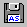

 Click the Save As button to save the current design under a new file name.
The Save As button can only be accessed from the File menu.
If you do not want to change the file name associated with your current design, use the Save File button.